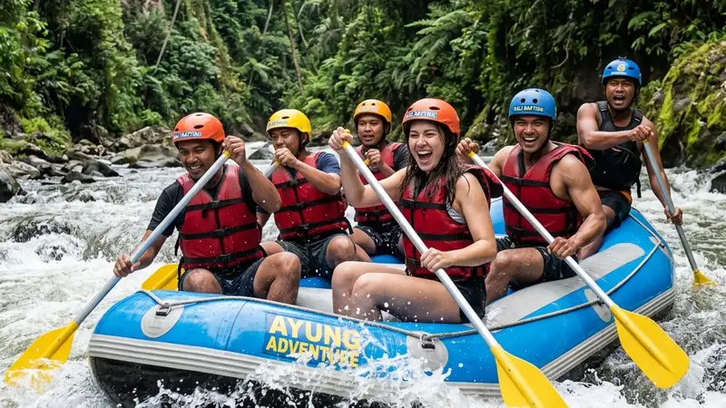

River rafting memberikan manfaat berupa peningkatan kekuatan otot, pelepasan stres, dan penguatan kerja sama tim melalui aktivitas mendayung bersama menyusuri jeram sungai.
- River rafting melatih kekuatan otot lengan, bahu, dan inti tubuh
- Aktivitas ini membantu melepas stres karena menuntut fokus penuh pada momen saat itu
- River rafting memperkuat kerja sama tim karena setiap dayungan harus selaras
- Aktivitas ini populer sebagai kegiatan outbound dan family gathering
- Studi umum tentang aktivitas luar ruang menunjukkan interaksi dengan alam dapat menurunkan tingkat stres peserta sejak dekade terakhir
Apa Manfaat Fisik dari River Rafting?
Manfaat fisik utama river rafting adalah melatih kekuatan otot lengan, bahu, dan inti tubuh melalui gerakan mendayung yang berulang saat melewati jeram.
Gerakan mendayung secara terus-menerus memaksa tubuh bekerja secara dinamis, terutama pada bagian lengan atas, punggung, dan perut yang berfungsi menjaga keseimbangan saat perahu bergoyang. Selain kekuatan otot, aktivitas ini juga melatih daya tahan kardiovaskular karena detak jantung meningkat selama melewati jeram dengan intensitas tinggi.
Karena melibatkan hampir seluruh kelompok otot besar, river rafting sering dianggap sebagai bentuk latihan fungsional yang menggabungkan unsur kekuatan dan ketahanan sekaligus.
Apakah River Rafting Membakar Kalori yang Cukup Banyak?
River rafting tergolong aktivitas fisik intensitas sedang hingga tinggi yang dapat membakar kalori cukup banyak tergantung durasi dan tingkat kesulitan jeram yang dilalui.
Semakin tinggi tingkat kesulitan jeram, semakin besar pula usaha fisik yang dibutuhkan untuk mendayung dan menjaga keseimbangan, sehingga pembakaran kalori pun cenderung meningkat. Durasi trip yang lebih panjang juga berkontribusi pada jumlah energi yang dikeluarkan sepanjang aktivitas berlangsung.
Apa Manfaat Mental dari River Rafting?
Manfaat mental river rafting terletak pada kemampuannya mengalihkan pikiran dari rutinitas harian karena peserta harus fokus penuh menghadapi jeram di depan mereka.
Saat menyusuri jeram, otak dipaksa berkonsentrasi pada instruksi pemandu dan kondisi sungai secara real time, sehingga secara alami mengurangi ruang bagi pikiran yang berkaitan dengan stres pekerjaan atau masalah sehari-hari. Sensasi menaklukkan jeram juga memberikan rasa pencapaian yang dapat meningkatkan kepercayaan diri peserta setelah trip selesai.
Paparan terhadap suasana alam terbuka seperti sungai dan hutan di sekitarnya turut memberikan efek menenangkan yang mendukung kesehatan mental secara umum.
Bagaimana River Rafting Membantu Mengatasi Rasa Takut?
River rafting dapat membantu peserta menghadapi dan mengelola rasa takut secara bertahap melalui paparan terkontrol terhadap tantangan fisik di lingkungan yang diawasi pemandu berpengalaman.
Proses menghadapi jeram dengan pendampingan profesional memberi ruang bagi peserta untuk belajar mempercayai kemampuan diri sendiri sekaligus tim, sehingga secara bertahap membangun ketahanan mental terhadap situasi yang awalnya terasa menakutkan.
Mengapa River Rafting Cocok untuk Kegiatan Tim?
River rafting cocok untuk kegiatan tim karena keberhasilan melewati jeram sangat bergantung pada kekompakan dan komunikasi antaranggota kelompok.
Setiap dayungan harus dilakukan secara serentak mengikuti aba-aba pemandu, sehingga anggota tim dituntut saling memperhatikan dan menyesuaikan ritme satu sama lain. Situasi ini secara alami membangun kepercayaan dan komunikasi yang efektif, menjadikan river rafting pilihan populer untuk kegiatan outbound perusahaan maupun acara kebersamaan keluarga.
Apakah River Rafting Efektif untuk Team Building Perusahaan?
River rafting efektif untuk kegiatan team building karena memaksa peserta berkolaborasi dalam tekanan situasi nyata yang membutuhkan keputusan cepat dan kerja sama solid.
Berbeda dengan permainan team building konvensional, tantangan fisik nyata dalam river rafting menciptakan pengalaman yang lebih berkesan dan mempererat hubungan antaranggota tim di luar konteks pekerjaan sehari-hari.
FAQ
Apa manfaat fisik utama dari river rafting?
Manfaat fisik utama meliputi peningkatan kekuatan otot lengan, bahu, inti tubuh, serta daya tahan kardiovaskular.
Apakah river rafting bisa mengurangi stres?
River rafting dapat membantu mengurangi stres karena menuntut fokus penuh pada momen saat itu sehingga mengalihkan pikiran dari beban rutinitas.
Apakah river rafting cocok untuk acara kantor?
River rafting cocok untuk acara kantor karena membangun kekompakan tim melalui kerja sama nyata saat mendayung menghadapi jeram bersama.
Arya
penulis artikel yang sudah berpengalaman di dalam dunia wisata outbound Batu Malang.